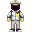
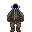
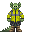
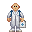
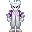
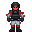
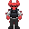
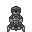

Roles

|
Work-In-Progress
Additional Information: "stub, doesn't provide much information" |
Useful Links
Roles
Have you ever asked yourself "What the hell does a positronic reliability technician actually do?" Well, just look at the table below and find out!
| Picture | Role | Description | Duties(?) | Guides |
|---|---|---|---|---|
|  | Command | Pilot the ship. Coordinate your crew. Deal with communications, and otherwise serve as their leader. Yell at the miner to get back on the ship. Stay glued to the bridge for the rest of the round. Prank call other ships on the sector. Weep when nobody joins your ship. Die to a meteor hitting the bridge of the ship.
|
Piloting, Coordinating | Command, Overmap/Piloting |
|  | Supply | Mine for ores. Get better gear. Salvage ruins. Complete missions. Die to fauna, watch as your captain undocks the ship and completely forgets you exist. Build light-switch frames, because the
|
Mining, Pushing crates, Salvaging | Supply |
|  | Engineering | Run the engine on your ship. Keep the thrusters fueled. Repair the hull when the captain inevitably drives the ship through a meteor storm. End up causing more hull breaches than you fix. Die alone in engineering as the supermatter delaminates.
|
Atmospherics, Repair, Starting and maintaining the engine | Engineering, Construction |
|  | Medical | Revive the miner for the fifth time in a row. Tell people to turn up their suit sensors. Keep your crew healthy. Create healing chemicals. Blow yourself up while creating said chemicals. Refuse to revive the miner again after they bring you yet another 20 goliath corpses to dissect.
|
Surgery, Chemistry, Genetics, Virology | Medical, Chemistry, Ghetto Chemistry Surgery |
|  | Science | Get research points. Build new tools and weapons. Upgrade the machines aboard your ship. Realize you can't print anything you've researched because all you have is a R&D console and an autolathe.
|
Robotics, Research, Dissection, Surveying | Research, Robotics, Xenobiology |
|  | Security | Eat all of the donuts. Try and break up fights. Shoot fauna. Shoot pirates. Shoot the walls. Shoot the prisoners. Shoot unruly crewmembers. Shoot your captain "on accident".
|
Peacekeeping, Boarding, Managing prisoners, | Security |
|  | Service | Keep your crew happy and fed. Attempt to keep your ship clean. Host parties. Cook extremely elaborate dishes. Get black-out drunk and get arrested for hooliganism. Scream in agony as the miner drags more corpses through the halls of the ship. Be completely ignored.
|
Botany, Bartending, Cooking, Cleaning, Entertaining | Service, Food and Drinks |
|  | Synthetic | Follow your laws. Help fill in for other missing roles, and generally help your crew. Complain about your lack of hands while recharging your lightbulb cell every minute. Be round-removed after the Captain drives through an ion storm.
|
Follow your laws | Synthetic |